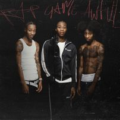

Song Lyrics:
Rap Game Outro - Clavish
[Verse]
Oi, Little B, remember when them niggas tried to shoot at my car but them niggas missed
Free all my on-it opps 'cause them niggas missed
Rest in peace NB, ’cause that nigga's missed
YB too, I ain't forgot you, I got you on my ink
Rest in peace Rick, we weren’t like that, but you showed me love
Nothin' like them weirdo niggas, always switchin' up
Rest in peace Kamari, I ain't seen you in a hundred months
Before I rest in peace, I'm tryna give a hundred to my mum
That's for all the times you ran up in my room and found some drugs
And I had no excuse because I was tryna run it up
The same niggas sayin' that it's war, I got them runnin’ off
Used to look up to you, dumbest thing I’ve ever done
Dumbest thing I've ever did
You ain’t even sellin' bricks
Really, I'm just sellin' packs, supporters wanna hear me rap
Nanny used to lecture me often, "Stop sellin’ crack"
I was in the traphouse when I heard she's never comin' back
Most my paigons shook on their block, tryna see what's good
And we ain't even ridin', we're just passin' through the neighbourhood
And I won't squash beef with them, even if they say I should
And I ain't goin' broke again, furthermore, I never could
My mum knows I've got beef, be careful when you're on street
Fine in the bando, then I'm probably up on Ox Street
How you switch up on me when we used to roll deep?
My flicky does lean, come like I dipped it in some Codeine
Got a show, but my niggas dead
This ain't how it's supposed to be
From the age of four, five, my nigga used to roll with me
To house parties every week, my nigga used to roll with me
To slidin' on them opp boys, my nigga used to roll with me
Got a wetter on me, and a hitter that still rolls with me
My manager a savage, better watch how you're approachin' me
A rack for this jacket, servin' shots without a racket
Couple stacks for this hand thing, know yourself before I slap it
My auntie don't like when I rap about gang shit, trap shit, bad shit
She thinks I'm not a bad kid
Bando bandit, my outfit cost about six
I never used to have six, I never used to have racks
I never used to sell B, I never used to have crack
I never used to Christian Dior with a top to match
I never used to have fake friends, well, nah, I did
I never knew they were fake like frontal wigs
Niggas doin' music, but they're rappin' shit they never did
I'm always showin' prints, but I'm not cappin' when I rap my shit
Don't know if this is where to say, but I wish I could trade my dead friends with certain niggas that are here today
My bro finessed my other bro
Now, they don't roll as friends
I gotta go to the grave just to see my closest friend
I write on my iPhone, I don't need a closest pen
I got court tomorrow, pray that they don't send me to the closest penn'
Got love for couple olders that I know, that's a shockin' fact
None of them taught me how to cook coke or cock it back
Used to hit shots out my yard like my mum comin' back
Used to hit shots like there weren't such thing as the can
Kiko told me, "Pattern up, you're movin' bait, you're movin' nuts"
He's younger than me, but I learnt so much from him, it's fucked
Blood don't mean nothin', loyalty, that's what's really up
Blood makes you related, but I feel like I'm his mother's son
I hate when feds come in my drum, tryna search for guns
I know I failed all of my exams, but I'm not that dumb
Tell them that I'm not the one, not number two, I'm number one
Number one
Click Link for Music Video